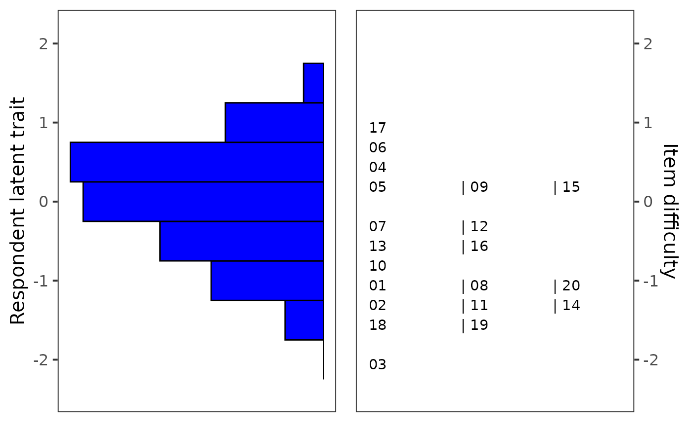
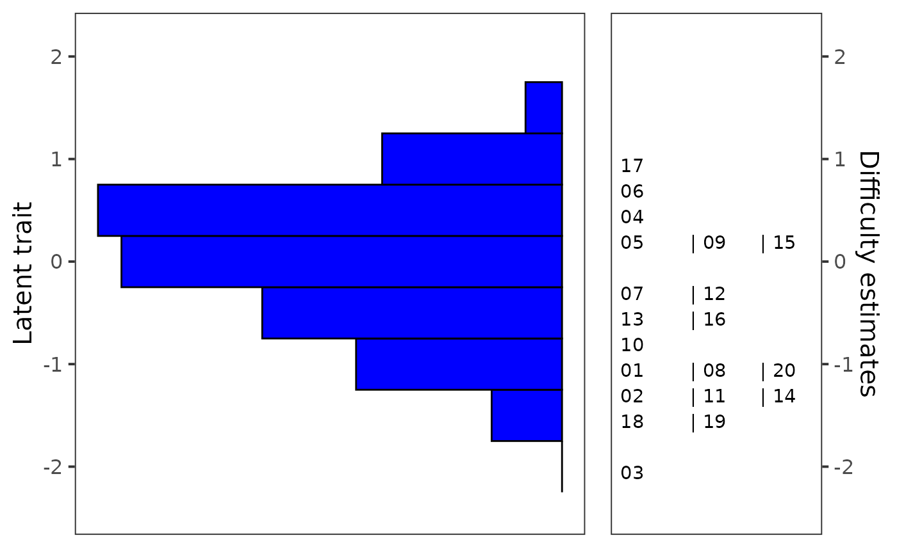

This function allows to generate Wright map (also called
item-person map) using ggplot() function from the ggplot2
package. Wright map is used to display histogram of factor scores and the
item difficulty parameters estimated by the Rasch IRT model.
ggWrightMap( theta, b, binwidth = 0.5, color = "blue", size = 15, item.names, ylab.theta = "Respondent latent trait", ylab.b = "Item difficulty", rel_widths = c(1, 1) )
| theta | numeric: vector of ability estimates. |
|---|---|
| b | numeric: vector of difficulty estimates. |
| binwidth | numeric: the width of the bins of histogram. |
| color | character: color of histogram. |
| size | text size in pts. |
| item.names | names of items to be displayed. |
| ylab.theta | character: description of y-axis for the histogram. |
| ylab.b | character: description of y-axis for the plot of difficulty estimates. |
| rel_widths | numeric: vector of length 2 specifying ratio of "facet's" widths. |
Wright, B. & Stone, M. (1979). Best test design. MESA Press: Chicago, IL
Adela Hladka
Institute of Computer Science of the Czech Academy of Sciences
hladka@cs.cas.cz
Jan Netik
Institute of Computer Science of the Czech Academy of Sciences
netik@cs.cas.cz
Patricia Martinkova
Institute of Computer Science of the Czech Academy of Sciences
martinkova@cs.cas.cz
#>#>data(HCI) # fit Rasch model with the mirt package fit <- mirt(HCI[, 1:20], model = 1, itemtype = "Rasch")#> Iteration: 1, Log-Lik: -7630.737, Max-Change: 0.16725 Iteration: 2, Log-Lik: -7621.806, Max-Change: 0.07642 Iteration: 3, Log-Lik: -7619.384, Max-Change: 0.03841 Iteration: 4, Log-Lik: -7618.624, Max-Change: 0.02089 Iteration: 5, Log-Lik: -7618.370, Max-Change: 0.01160 Iteration: 6, Log-Lik: -7618.277, Max-Change: 0.00668 Iteration: 7, Log-Lik: -7618.233, Max-Change: 0.00423 Iteration: 8, Log-Lik: -7618.221, Max-Change: 0.00228 Iteration: 9, Log-Lik: -7618.216, Max-Change: 0.00135 Iteration: 10, Log-Lik: -7618.214, Max-Change: 0.00091 Iteration: 11, Log-Lik: -7618.213, Max-Change: 0.00047 Iteration: 12, Log-Lik: -7618.213, Max-Change: 0.00029 Iteration: 13, Log-Lik: -7618.213, Max-Change: 0.00018 Iteration: 14, Log-Lik: -7618.213, Max-Change: 0.00010 Iteration: 15, Log-Lik: -7618.213, Max-Change: 0.00005# factor scores theta <- as.vector(fscores(fit)) # difficulty estimates using IRT parametrization b <- coef(fit, simplify = TRUE, IRTpars = TRUE)$items[, "b"] # Wright map ggWrightMap(theta, b)# Wright map with modified item names item.names <- paste("Item", 1:20) ggWrightMap(theta, b, item.names = item.names)# Wright map with modified descriptions of y-axis and relative widths of plots ggWrightMap(theta, b, ylab.theta = "Latent trait", ylab.b = "Difficulty estimates", rel_widths = c(2, 1) )